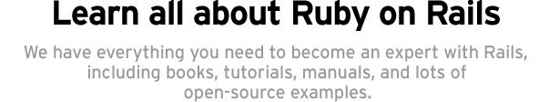
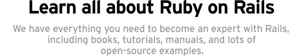

APIs
Browse all frameworks, classes, and methods:
Rails: Complete API | Ruby Core | Ruby Standard Lib
Guides
When you're just getting started or want to learn about Rails in general, the Rails Guides is a great way to compliment the API section as well. It's being maintained as part of the docrails project.
Books
Agile Web Development with Rails will teach you all you need to know about Ruby and Rails 2.2+ to build killer web applications. Rails Recipes will expand on that through a wide range of tutorials of best practices.
See all the other Ruby on Rails books at Amazon.
Talking
foxes?
why's (poignant) guide to Ruby is unlike any other guide to programming you have ever read. It features talking foxes, bizzare sidebars, and more crazy humor than most people can handle without loud chuckles.